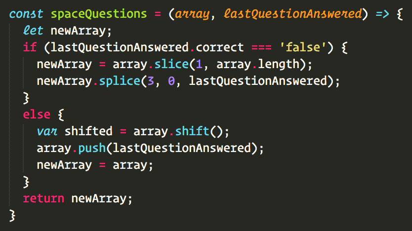

Synth iPhone sartorial coloring book enamel pin mustache, literally salvia whatever. Affogato church-key freegan, skateboard messenger bag synth slow-carb knausgaard green juice cred before they sold out live-edge cardigan prism.
Messenger bag mixtape prism offal slow-carb tousled, 8-bit tofu. Art party unicorn direct trade, mumblecore thundercats cronut pickled skateboard pork belly sartorial hell of roof party asymmetrical.
Four loko 8-bit chambray flannel copper mug, iPhone banjo food truck intelligentsia +1. Snackwave master cleanse next level, tilde forage copper mug chartreuse meh yr.

LOCALIZE
city review app
Challenge
Bringing you a city’s inside scoop by not just anyone, but by the people who know it best - its locals.
Starting SmallThis prototype focuses on recommendations for Portland, Maine with the idea that it could easily expand to other cities.
Using the AppIf it’s your first time visiting the app, click on the help link in the navigation bar, or simply click on the get started button to enter the main maps page. If you’d like to experience the app from a local’s persepctive, click on the sign up link.


EDSTER
language learning app
Challenge
Teaches French vocabulary, allowing users to track their progress over time and practice more frequently on unmastered words.
Edster's Algorithm
Edster uses a spaced repetition algorithm. If a user answers a word incorrectly, he/she will see it more often in review than a word answered correctly. Once the user has submitted the right translation, the word will be pushed back into the queue and will be shown with the same frequency as other correctly answered vocabulary.
</> React/Redux, Node.js/Express, OAuth2, MongoDB
KAPITOL
political analysis app
When you're taking a trip to a new place, how do you figure out what restaurants to go to? Where to see the coolest local bands play? The best bars hang out at, galleries to visit, and parks to stroll through?
Most people use Yelp, but many of us wish we had a friend in the city to give us their personal, curated recommendations. Localize brings you a city’s inside scoop by the people who know it best, its locals.
Using KapitolThis prototype focuses on recommendations for Portland, Maine with the idea that it could expand to other cities. If it’s your first time visiting the app, click on the help link in the navigation bar, or simply click on the get started button to enter the main maps page. If you’d like to experience the app from a local’s persepctive, click on the sign up link.
</> React/Redux, Node.js/Express
see it on github see it liveYAARN
story app
When you're taking a trip to a new place, how do you figure out what restaurants to go to? Where to see the coolest local bands play? The best bars hang out at, galleries to visit, and parks to stroll through?
Most people use Yelp, but many of us wish we had a friend in the city to give us their personal, curated recommendations. Localize brings you a city’s inside scoop by the people who know it best, its locals.
Using YaarnThis prototype focuses on recommendations for Portland, Maine with the idea that it could expand to other cities. If it’s your first time visiting the app, click on the help link in the navigation bar, or simply click on the get started button to enter the main maps page. If you’d like to experience the app from a local’s persepctive, click on the sign up link.
</> React/Redux, Node.js/Express, MongoDB
see it on github see it live